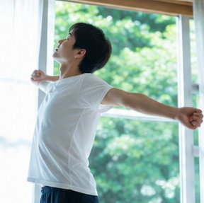
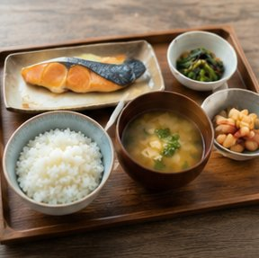
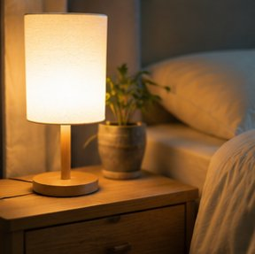
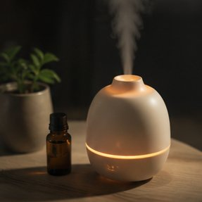

スポンサーリンク
10問のチェックで睡眠スコアを算出。今夜から取り組める改善法を提案します。
⏱ 10問完結
たった10問に答えるだけで睡眠の質を診断。スマホでもPCでも快適に利用できます。
📊 スコア算出
0〜30点のスコアで睡眠の質を数値化。4段階の判定で現状を把握できます。
🔄 比較分析
複数のシナリオを作成して比較。改善習慣を取り入れた場合のスコア変化をシミュレートします。
🤖 AIアドバイス
診断結果に基づいたパーソナライズされた改善アドバイスを提案します。

📤 共有機能
LINE・X（Twitter）でシェア可能。印刷・CSV出力にも対応しています。
📋 履歴記録
診断履歴を最大10回分保存。スコアの推移グラフで改善の進捗を可視化します。
過去1ヶ月の睡眠状態について10問に答えてください。選択肢をタップするだけで進みます。

睡眠スコアが0〜30点で算出されます。4段階の判定と改善アドバイスが表示されます。

提案された改善策を今夜から実践。シミュレーション機能で改善後のスコアも確認できます。
🌙 就寝前ルーティン

🍽 食事・運動
🏠 寝室環境
🧘 ストレス管理
過去1ヶ月の状態についてお答えください